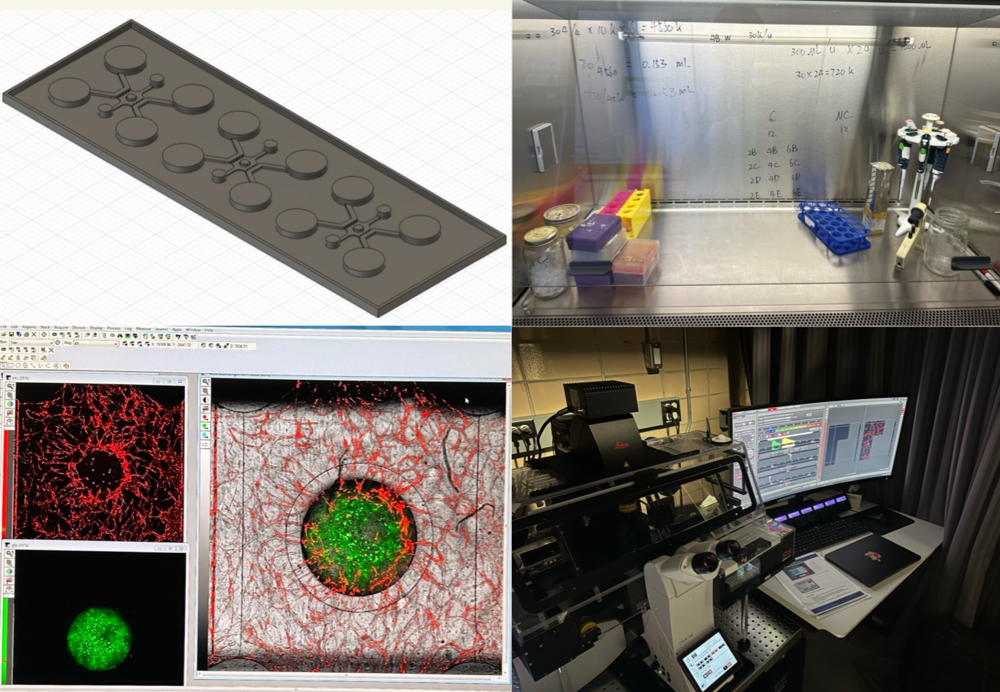
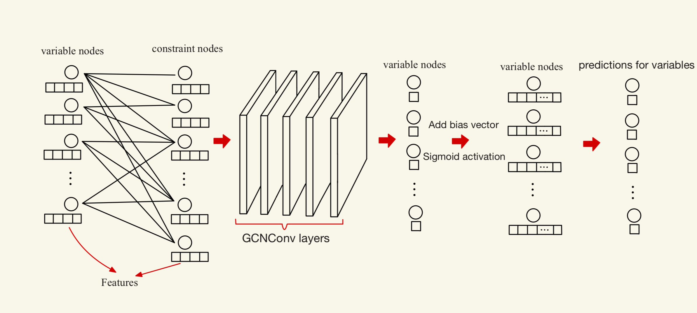
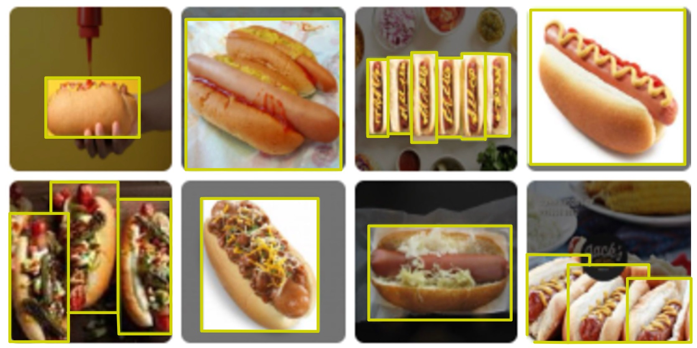
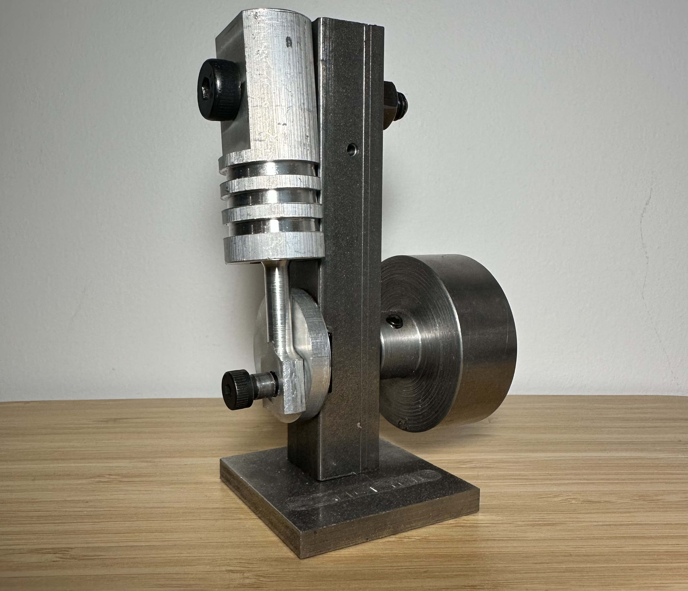

In the labTumour-on-a-Chip Model
Fabricating microfluidic devices and studying cells to model the tumour microenvironment in vitro.
View projectEngineering · Research · Code
Curious by nature.
Hands-on by design.
Mechanical Engineering student at the University of Toronto, exploring the intersection of intelligent systems, thoughtful design, and biomedical research.
jili.you@mail.utoronto.ca01 / A selection of projects
07 projectsFrom the workshop to the lab,
and the code in between.

In the labFabricating microfluidic devices and studying cells to model the tumour microenvironment in vitro.
View project
Exploring graph neural networks for vulcanizing planning decisions in rubber manufacturing.
View project
Comparing three neural network architectures for clothing image classification with PyTorch.
View project
Training a Faster R-CNN model to locate hot dogs in images using a custom annotated dataset.
View project
Turning machining practice into a working piston and slider-crank mechanism powered by compressed air.
View project
Creating the steering wheel CAD model for the team's 2023 Urban Concept car.
View project
A personal website built with HTML, CSS, and JavaScript to share my projects and interests.
View project02 / A little about me
Hello! I am a third-year Mechanical Engineering student at the University of Toronto. I have a strong passion for machine learning, automotive design, and the integration of biomedical and mechanical fields.
I enjoy applying technical knowledge and problem-solving skills to tackle real-world challenges. Through my projects both in and outside class, I have gained proficiency in Python, PyTorch, and SolidWorks.
I look forward to applying my skills and passion to contribute to pioneering projects and innovations in mechanical engineering design and biomedical applications.
Some tools I work with
03 / Get in touch
Have a question about my work? I’d love to hear from you.